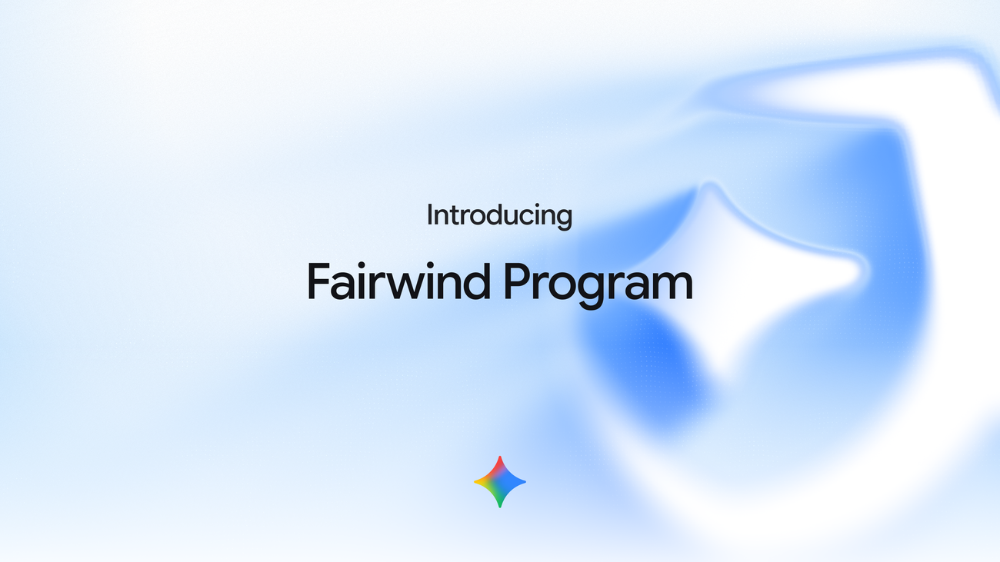
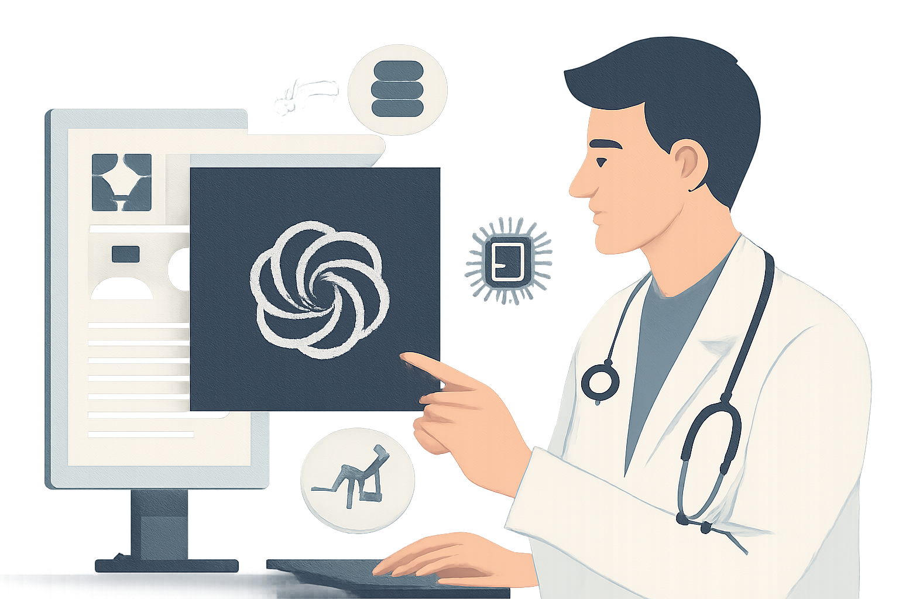
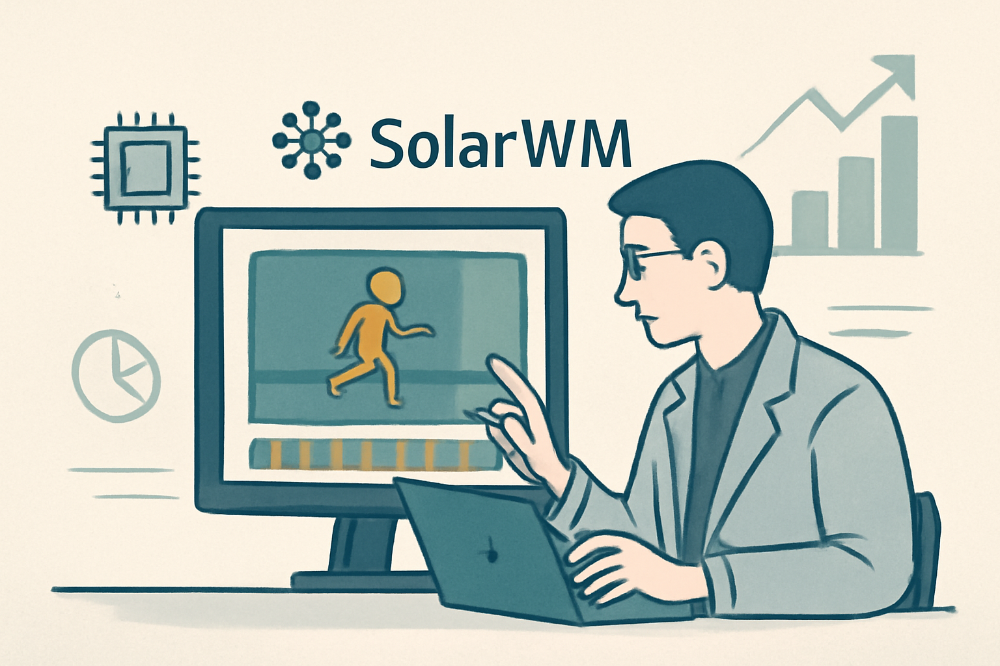
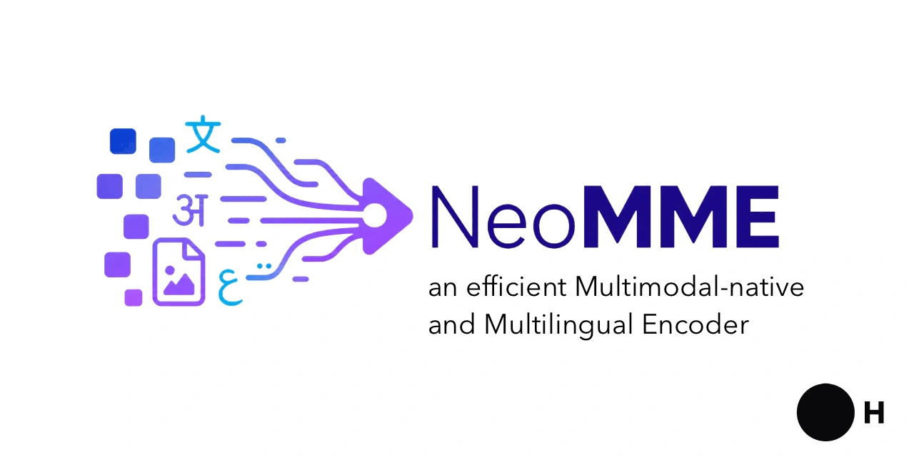

01 프론티어 & 사업 동향
OpenAI가 GPT-6 Astra를 전면 배포한다
“GPT‑6 Astra는 컴퓨터 사용, 소프트웨어 엔지니어링, 사이버보안, 과학 분야에서 새 성능 기록을 제시했다.”
Weekly AI Brief
이번 주에는 프론티어 모델 공개와 인프라 확장이 동시에 눈에 띄었습니다. OpenAI와 구글이 새 모델을 내놓고 배포 범위를 넓히는 사이, 엔비디아의 허깅페이스 인수 계약과 OpenAI의 10억달러 지원처럼 생태계 장악과 필수 서비스 보호에 돈이 붙었습니다. 공개 모델 쪽에서는 검색 에이전트, 영상 월드 모델, 문서 검색용 인코더가 이어지며 성능 경쟁이 응용 단계로 내려왔고, 보안 쪽에서는 에이전트 관측성과 의료·은행 데이터 연동처럼 민감 정보를 다루는 방식이 핵심 쟁점으로 떠올랐습니다. 이번 주에는 새 모델 자체보다, 누가 배포권을 쥐는지와 어떤 데이터·보안 경계 안에서 쓰게 되는지를 먼저 살펴봐야 합니다.

Editor's Pick
01 프론티어 & 사업 동향
“GPT‑6 Astra는 컴퓨터 사용, 소프트웨어 엔지니어링, 사이버보안, 과학 분야에서 새 성능 기록을 제시했다.”
02 프론티어 & 사업 동향
“Gemini 3.8 Flash는 3.7과 같은 속도와 낮은 가격을 유지하면서, 더 긴 추론과 도구 호출로 성능을 끌어올렸다.”
03 프론티어 & 사업 동향
“엔비디아는 허깅페이스에서 엔비디아 연산 자원을 쓰지 않아도 모델을 만들고 배포할 수 있다고 약속했다.”
대형 연구소의 모델 공개·프리뷰, 규제/정책, 파트너십 등 산업이 움직인 사건입니다.
01 OpenAI 게시일 2026.09.03
OpenAI가 새 주력 모델 GPT-6 Astra를 공개하고 ChatGPT와 API, Azure, AWS Bedrock으로 배포한다.
“GPT‑6 Astra는 컴퓨터 사용, 소프트웨어 엔지니어링, 사이버보안, 과학 분야에서 새 성능 기록을 제시했다.”
 01
0102 Google 게시일 2026.09.02
구글이 Gemini 3.
“Gemini 3.8 Flash는 3.7과 같은 속도와 낮은 가격을 유지하면서, 더 긴 추론과 도구 호출로 성능을 끌어올렸다.”
 02
0203 The New Stack 게시일 2026.09.03
엔비디아가 허깅페이스를 129억 달러에 인수하기로 합의했다.
“엔비디아는 허깅페이스에서 엔비디아 연산 자원을 쓰지 않아도 모델을 만들고 배포할 수 있다고 약속했다.”
 03
0304 Google DeepMind 게시일 2026.09.02
구글이 정부와 기업을 위한 제한형 사이버 방어 프로그램 Fairwind를 시작했다.
“Fairwind Program은 Gemini 3.8 Flash Cyber와 CodeMender를 묶어 취약점을 찾고 검증된 패치를 수분 안에 만들도록 설계됐다.”

0405 OpenAI 게시일 2026.09.03
OpenAI가 전력, 수도, 지방정부, 지역은행 같은 필수 서비스 운영 조직을 겨냥한 사이버 보안 지원 프로그램을 내놨다.
“OpenAI는 필수 서비스 운영 조직이 AI 보안 도구를 쓰도록 10억달러 규모의 지원 프로그램을 시작했다.”
 05
0506 OpenAI 게시일 2026.09.01
OpenAI가 의료기관용 ChatGPT에 전자의무기록 연동과 공공 의료 데이터 플러그인을 추가했다.
“의료기관은 이제 Epic 환경을 ChatGPT에 연결해 승인된 환자 기록을 함께 검토할 수 있다.”

06오픈웨이트 모델과 GitHub/Hugging Face 생태계에서 주목할 프로젝트입니다.
07 arXiv 게시일 2026.09.03
연구진이 검색 에이전트 Iris-mini와 Iris-pro를 소개했다.
“Iris-mini와 Iris-pro는 단일 ReAct 에이전트로 공개 검색 벤치마크 상위권 점수를 냈다.”
08 arXiv 게시일 2026.09.02
연구진이 장시간 상호작용형 영상 월드 모델을 위한 공개 학습 기반 SolarWM을 제시했다.
“SolarWM은 10개 데이터셋의 143만 개 표준 클립을 하나의 학습 계약으로 통합했다.”

0809 Hugging Face 게시일 2026.09.03
H company가 다국어·멀티모달 인코더 NeoMME를 공개했다.
“NeoMME-Retriever는 한 번의 추론으로 밀집 임베딩과 지연 상호작용 임베딩을 함께 만든다.”

09논문·벤치마크·기법 연구 중 실무 관점에서 볼 만한 결과입니다.
이번 주는 소개할 만한 연구·논문이 부족했습니다.
개발 도구, 인프라, 보안 이슈 등 바로 써먹거나 조심해야 할 소식입니다.
10 The New Stack 게시일 2026.09.02
지난 호에서 다룬 Claude 정렬 이슈의 후속 소식이다.
“프롬프트만으로는 AI 에이전트를 안전하게 통제할 수 없다는 점이 실제 사례로 드러났다.”
 10
10